Guia para desbloquear o PlayStation 5
Jogar não tem limites.
Aviso legal — leia antes de tudo
- Este guia tem fins educacionais. Não apoio nem incentivo pirataria: use somente jogos, BIOS e arquivos que você comprou ou extraiu dos seus próprios consoles e discos. Não compartilho, e não vou compartilhar, links para jogos ou BIOS.
- Desbloquear o console pode anular a garantia e viola os Termos de Serviço da Sony, o que pode levar ao banimento da sua conta PSN. Para evitar isso, remova sua conta do console antes do desbloqueio ou use uma conta descartável.
- As leis sobre contornar proteções técnicas mudam de país para país (no Brasil, por exemplo, a Lei 9.610/98 trata disso). Verifique o que vale onde você mora. Isto não é aconselhamento jurídico.
- Você faz tudo por sua conta e risco. Não me responsabilizo se algo der errado com seu console, sua conta ou seus dados.
- Não tenho nenhuma ligação com a Sony, a Microsoft, a Nintendo, a Valve ou qualquer projeto citado aqui. Todas as marcas pertencem aos seus respectivos donos.
- Esse cenário muda muito rápido, então algumas informações podem ficar desatualizadas. Confira sempre a data de atualização do post.
O que dá para fazer com um PlayStation desbloqueado?
- Jogar jogos antigos de outros consoles via emulação (veja a lista abaixo)
- Rodar seus jogos da Steam
- Rodar Linux e modelos de IA
- Usar aplicativos homebrew (feitos pela comunidade)
- Jogar online*
* Só em jogos que rodam via emulador ou via Steam, não em jogos de PS4/PS5.
O que você não consegue fazer
- Jogar jogos de PS4/PS5 online
- Usar os serviços da Sony (PlayStation Store, PlayStation Network)
Minha conta pode ser banida? Dá para voltar atrás?
Banimento: não tenho como garantir que nada vai acontecer. Se estiver em dúvida, remova sua conta PSN do console antes de fazer o desbloqueio.
Voltar ao normal: sim, é só atualizar o sistema para a versão mais recente, e o console volta a ser um PS5 comum. Mas atenção: depois de atualizar, não tem como desbloquear de novo, porque a Sony não deixa voltar para versões antigas (downgrade).
Passo 1: Confira a versão do seu sistema
O desbloqueio só funciona em algumas versões do sistema, então primeiro veja qual é a sua.
Vá em Configurações:
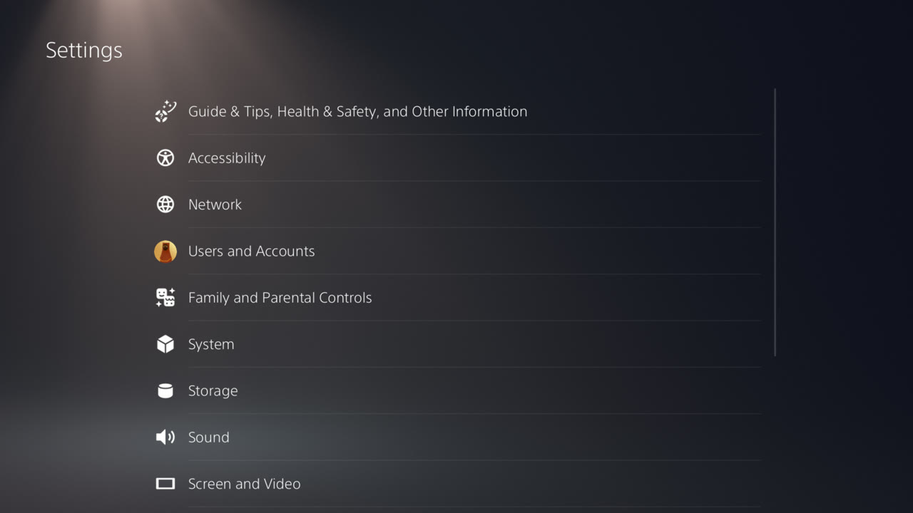
Depois em Sistema → Software do sistema → Informações do console:
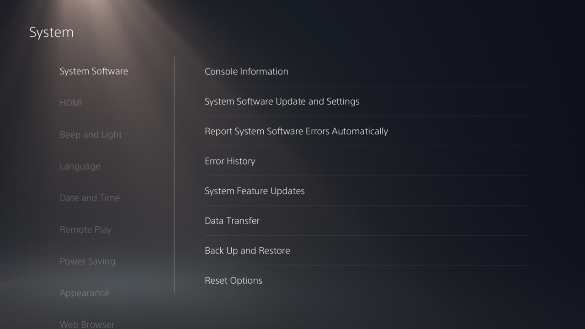
Agora compare com a tabela:
| Versão do sistema | Situação |
|---|---|
| 13.60 ou inferior | ✅ Dá para desbloquear. Siga para o Passo 3. |
| 14.00 – 14.10 | ⏳ Ainda não tem nada, mas a comunidade está trabalhando nisso. Não atualize o console (veja o Passo 2). |
| 14.20 ou superior | ❌ Não tem nada no momento. |
Se você está na versão 14.20 ou superior e quer muito fazer o desbloqueio, minha recomendação é vender o seu e comprar um console com uma versão antiga do sistema (aproveite a Black Friday).
Passo 2: Desative as atualizações automáticas
Se o seu console está numa versão compatível (ou numa versão que pode ganhar desbloqueio no futuro), não deixe ele atualizar sozinho.
Vá em Configurações → Sistema → Software do sistema → Atualização e configurações do software do sistema e desative:
- Baixar arquivos de atualização automaticamente
- Instalar arquivos de atualização automaticamente
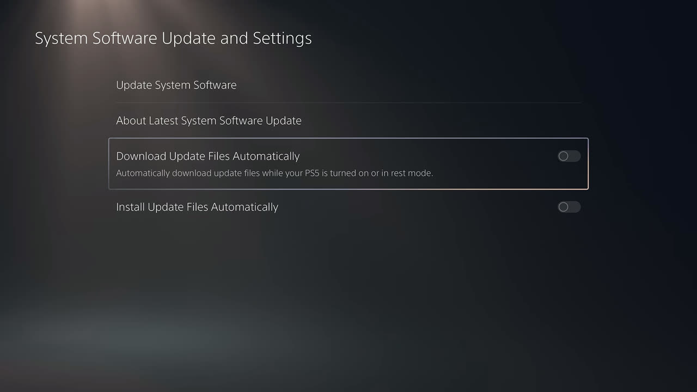
E quando o console pedir para atualizar, recuse.
Passo 3: Como desbloquear
Recomendo seguir o vídeo do ModdedWarfare, que tem dublagem em PT-BR. Logo abaixo tem o mesmo passo a passo por escrito, com prints do vídeo.
Resumo rápido
- Desconecte da internet, desative as atualizações e confira a versão (de 7.00 até 13.60).
- Limpe os dados do navegador, coloque um DNS manual que bloqueia as atualizações e anote o IP do console.
- Abra o Guia do usuário e rode o jailbreak Relapse.
- Instale o Payload Manager (pldmgr) e, por ele, os payloads principais.
- Instale o WebKit Autoloader para fazer o jailbreak offline das próximas vezes.
- Instale apps e jogos pelo PS5Upload (pela rede) ou por um pendrive.
3.1 Prepare o console
- Vá em Configurações → Rede → Configurações e desmarque Conectar-se à internet (só por enquanto).
- Confira se as atualizações automáticas estão desativadas (Passo 2).
- Confira a versão do sistema (Passo 1). Esse jailbreak funciona da 7.00 até a 13.60.
- Vá em Configurações → Sistema → Navegador da Web e use Excluir cookies e Limpar dados do site.
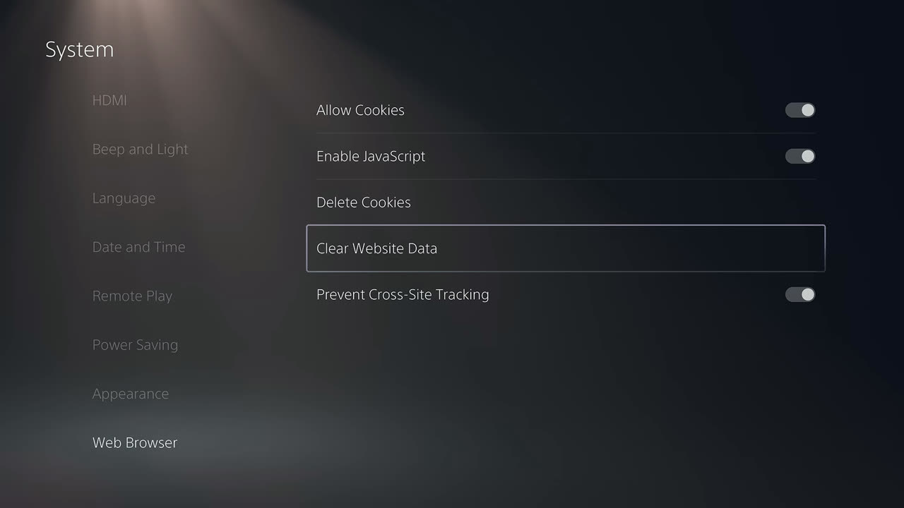
3.2 Configure o DNS
- Volte em Rede → Configurações, ative a internet e configure a conexão (cabo ou Wi-Fi).
- Na conexão, abra as Configurações avançadas (se já estiver conectado, aperte Options em cima da rede).
- Em Configurações de DNS, troque de Automático para Manual e coloque como DNS primário um destes:
62.210.38.11745.56.67.85
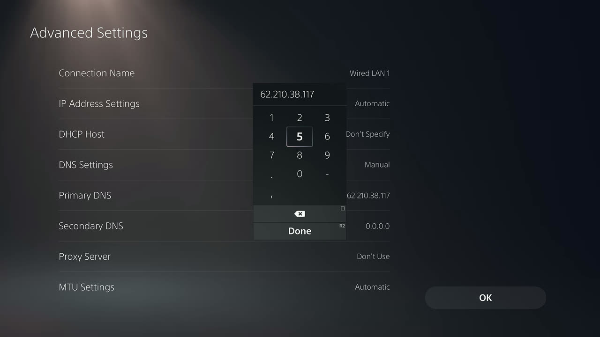
Note
É normal o teste de conexão dizer que não conseguiu conectar à internet. Esses DNS bloqueiam os servidores de atualização da Sony, é isso que queremos. Páginas da Sony, como a da sua conta, também vão mostrar Não é possível exibir a página.
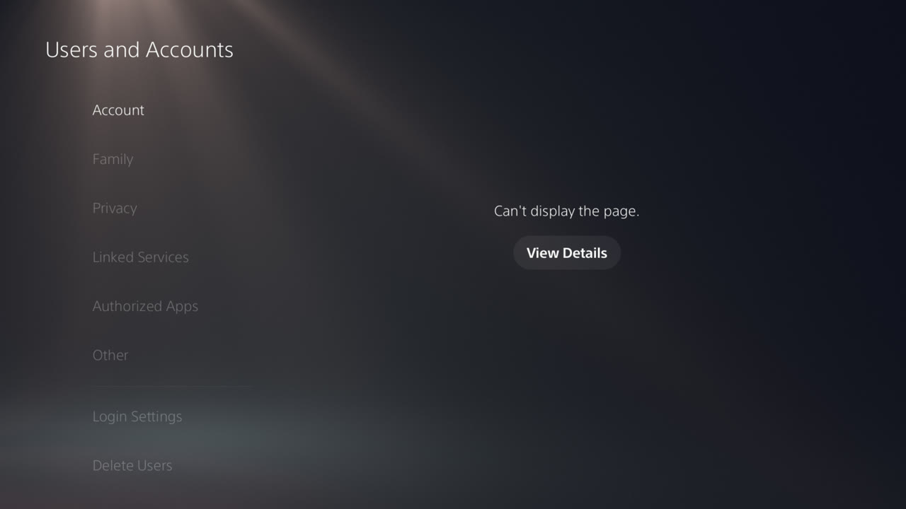
- Vá em Configurações → Sistema → Software do sistema → Informações do console e anote o endereço IPv4 do seu PS5 (ex.:
192.168.1.23). Você vai precisar dele depois para acessar o Payload Manager pelo navegador e para conectar o PS5Upload.
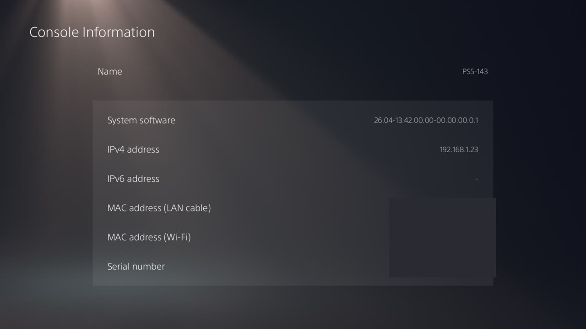
3.3 Rode o jailbreak
- Vá em Configurações → Guia e dicas → Guia do usuário e aceite o certificado de segurança.
- Vai abrir uma página com vários sites que hospedam o jailbreak. Se um não funcionar, é só tentar outro (ex.: Karo, ou o Relapse do Sonic).
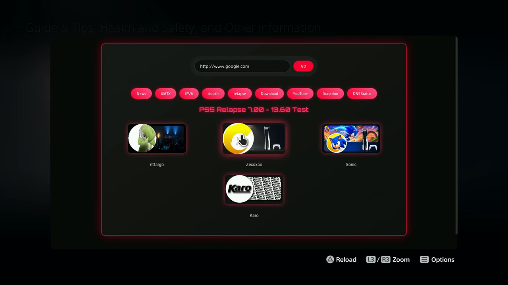
- Na página do Relapse, aperte X em Jailbreak.
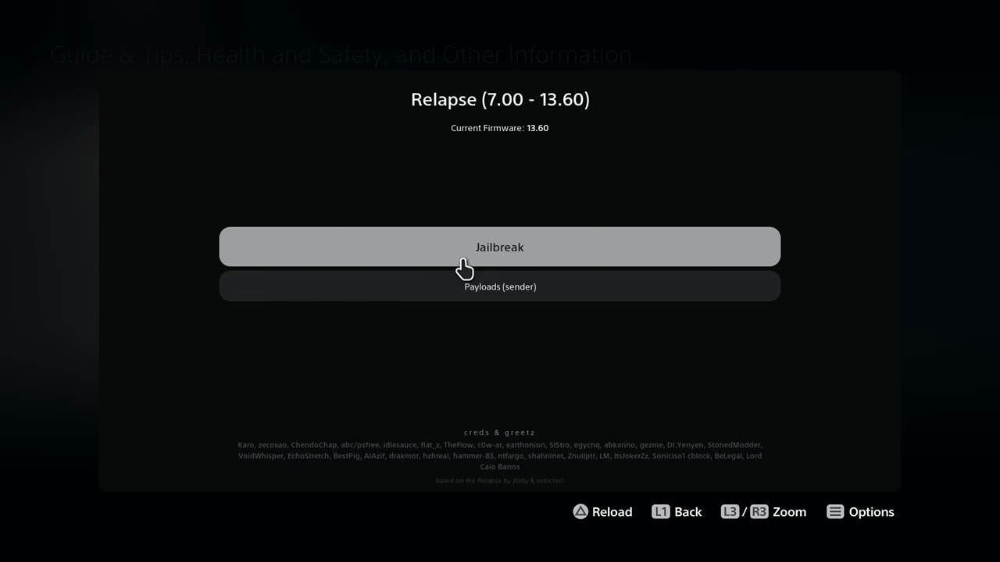
- Se deu certo, aparece a página de payloads:
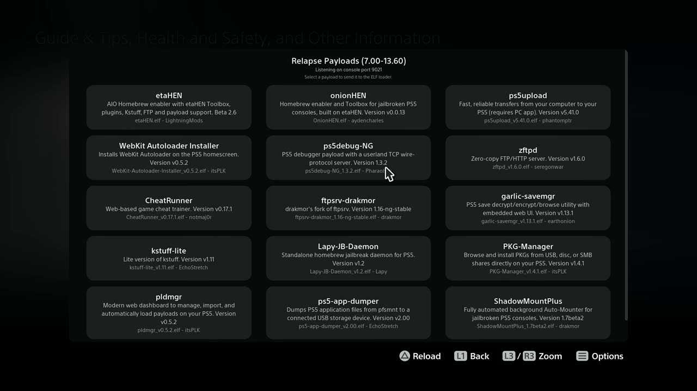
Não funcionou de primeira? Normal.
O jailbreak não é 100% estável. Se travar ou o console desligar, segure o botão de ligar até desligar, ligue de novo (vai demorar mais para iniciar) e tente outra vez. Normalmente funciona em até 3 tentativas.
O Guia do usuário não abre a página do jailbreak?
Primeiro tente sair e entrar de novo no seu perfil do PS5 e abrir o Guia do usuário outra vez.
Se ainda não funcionar, dá para usar o computador como servidor:
- Baixe o PS4/PS5 Exploit Host (link na descrição do vídeo) e abra no PC.
- Em User's Guide, selecione relapse e clique em Start. Se o firewall perguntar, permita o acesso.
- O programa mostra o IP do seu computador (ex.:
192.168.1.128). Coloque esse IP como DNS primário no PS5. - Abra o Guia do usuário de novo. Se não carregar, use as opções Open firewall ports ou Turn firewall off no programa.
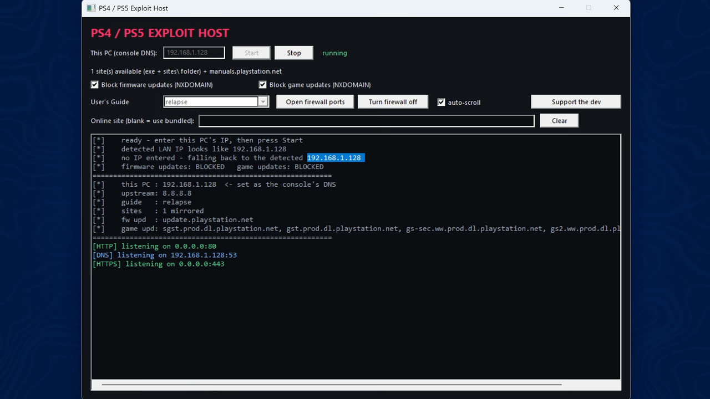
3.4 Instale o Payload Manager e os payloads
- Na página de payloads, escolha o pldmgr (Payload Manager).
- Se ele abrir com os ícones bugados, feche e abra pelo atalho que ele cria na aba Mídia. Se o atalho não aparecer, volte no Guia do usuário, escolha Payloads only e rode o pldmgr de novo.
- Vá em Manage Payloads → Cloud Repository (aperte para atualizar se estiver vazio) e instale:
- Loaders → WebKit Autoloader Installer
- Networking & Servers → PS5Upload
- System & Jailbreak → kstuff-lite
- Utilities & Tools → ShadowMountPlus
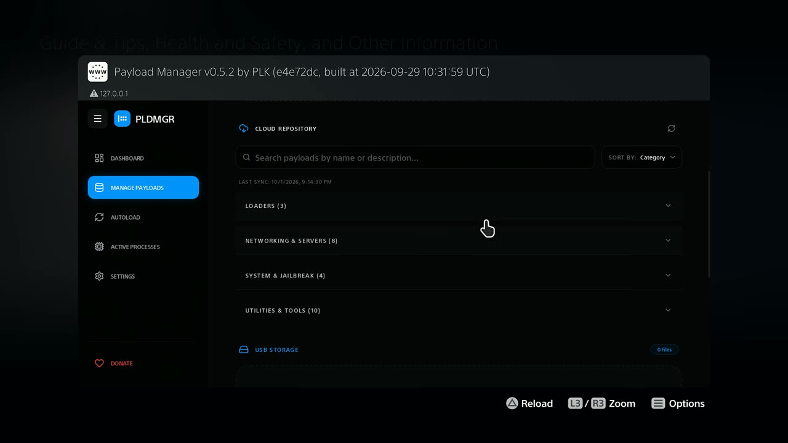
- Em Autoload, ative o carregamento automático e adicione kstuff-lite e ShadowMountPlus. Os outros você roda manualmente quando precisar.
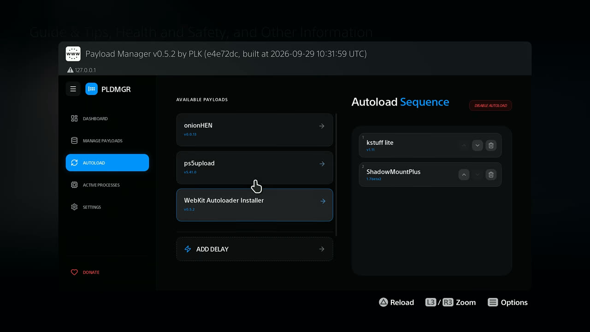
3.5 Jailbreak offline com o WebKit Autoloader
- No Dashboard do pldmgr, rode o WebKit Autoloader Installer. Se aparecer um aviso de cache corrompido, escolha Clear WebKit Data & Retry.
- Quando terminar, aparece o ícone WebKit Autoloader na aba Mídia.
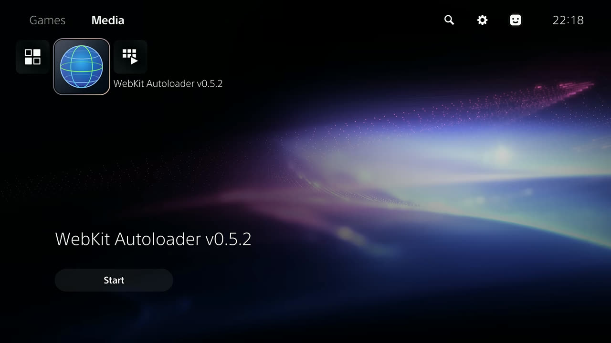
Agora você não depende mais dos sites públicos nem da internet: é só abrir o WebKit Autoloader que ele faz o jailbreak, abre o pldmgr e, depois de 5 segundos, carrega os seus payloads.
O jailbreak não é permanente
Toda vez que você reiniciar ou desligar o PS5, precisa rodar o jailbreak de novo (pelo WebKit Autoloader). Se usar o modo de repouso, o jailbreak continua ativo.
Extra: enviar payloads que não estão no repositório (ex.: etaHEN)
- Pegue o IP do PS5 que você anotou no passo 3.2.
- No celular ou PC (na mesma rede), abra o navegador em
http://IP-DO-PS5:8084. - Em Manage Payloads, envie o arquivo
.elf. Ele vai aparecer no pldmgr do console para você carregar.
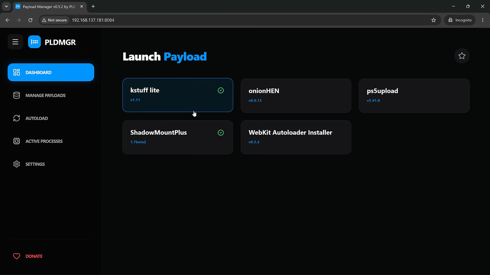
3.6 Instalando apps e jogos
Apps homebrew você encontra no homebrew.page ou na Prospero Store.
Formatos e versões
- Arquivos
.pkgde PS4 funcionam normalmente. - Arquivos
.pkgde PS5 só funcionam até a versão 11.60 (por enquanto). - Jogos de PS5 também podem vir como pasta extraída,
.exfatou.ffpfs. O ShadowMountPlus monta esses automaticamente.
Convertendo formatos: Alembic
Alembic, converte pacotes e dumps de PS4 e PS5 entre FPKG, exFAT, FFPKG, FFPFS e FFPFSC, direto no console ou no PC. Útil para transformar seus dumps de PS4 em pacotes .pkg e vice-versa.
Pela rede: PS5Upload
- No PS5, rode o payload PS5Upload pelo pldmgr.
- Baixe o PS5Upload no PC ou celular (tem para Windows, macOS, Linux e Android).
- Clique em Connect PS5, coloque o IP do PS5 (o que você anotou no passo 3.2) e clique em Check. Se não conectar, use Send helper.
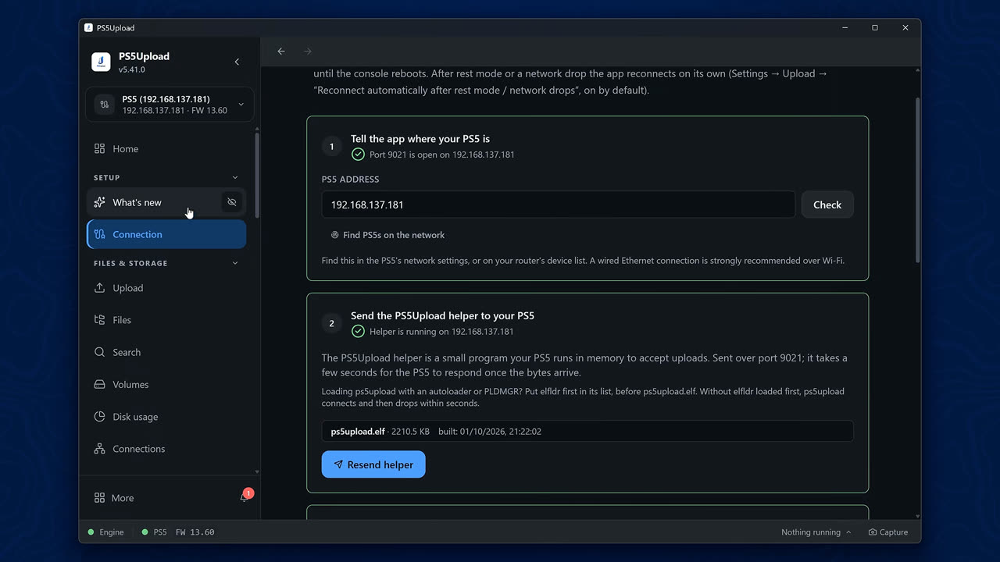
- Em Upload, arraste os arquivos, deixe o destino em homebrew e clique em Upload. Ele instala tudo e coloca na tela inicial sozinho.
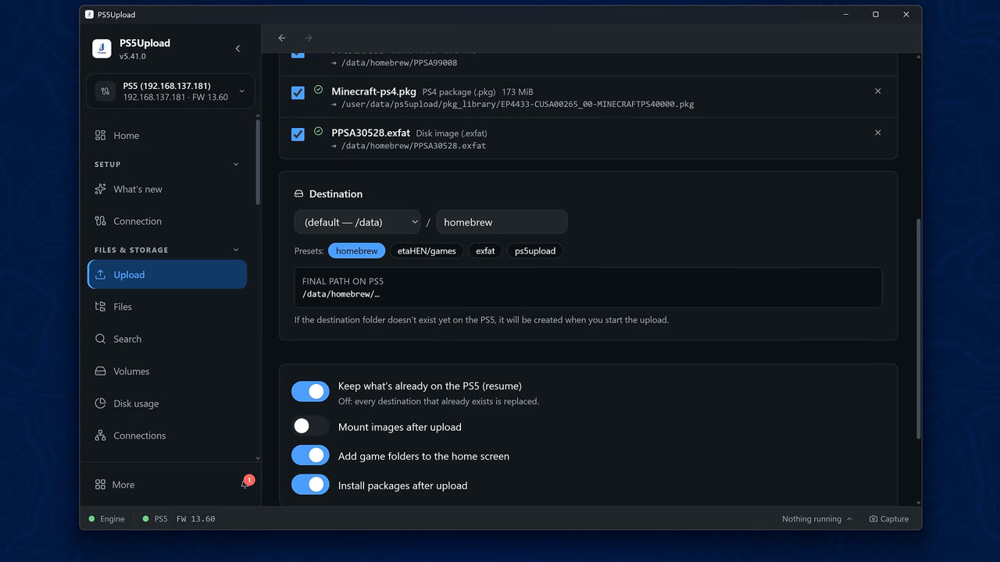
Pelo pendrive (mais rápido)
- Formate o pendrive em exFAT ou FAT32.
- Crie uma pasta
homebrewna raiz e coloque os apps de PS5 dentro dela. Os.pkgde PS4 vão direto na raiz do pendrive. - No pldmgr, instale e rode o ps5 web file manager (em Utilities). Ele cria o ícone Web File Manager na aba Mídia.
- Abra o Web File Manager, vá em
/mnt/usb0, copie a pastahomebrewe cole dentro de/data.
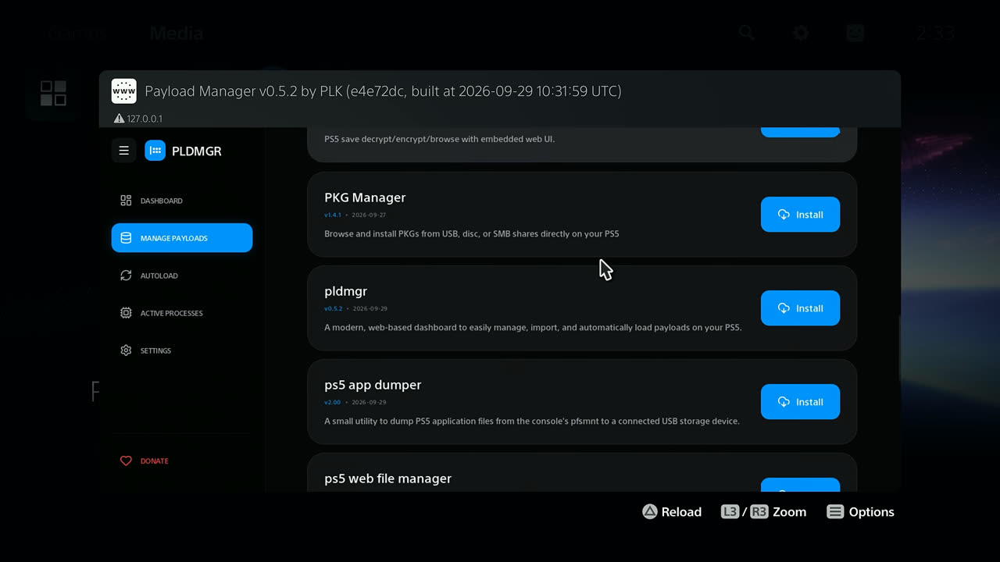
- Para os
.pkgde PS4: Configurações → Configurações de depuração → Game → Package Installer (com etaHEN: Content Management → Package Installer) e instale.
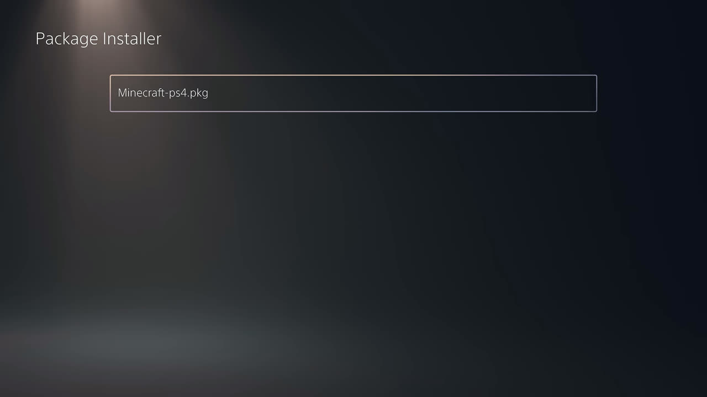
Método alternativo: Y2JB
Também dá para desbloquear usando o Y2JB. Eu pessoalmente não usei, mas o processo é bem parecido e, supostamente, funciona melhor.
Prospero Store
A Prospero Store é uma loja não oficial, feita pela comunidade, que reúne emuladores e apps homebrew. É o jeito mais fácil de instalar tudo o que aparece daqui pra baixo, e ela também atualiza os apps direto do PS5.
Como instalar:
- Baixe o
PPSA99000.zipda última versão no GitHub. - Extraia e envie a pasta para o PS5 pelo PS5Upload ou pelo pendrive, igual a qualquer outro app.
- Abra a Prospero Store pela tela inicial e instale os apps por ela.
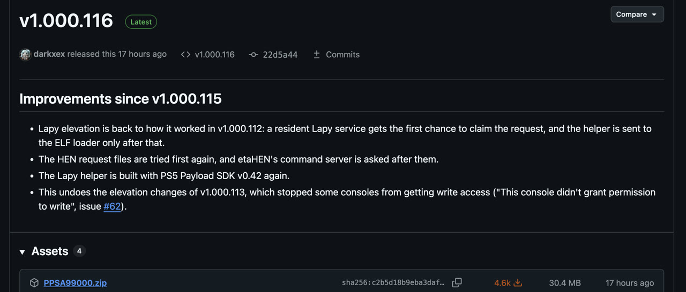
Emuladores
Lembrete
Emuladores são legais, mas jogos (ROMs/ISOs) e BIOS não vêm junto. Use apenas cópias dos seus próprios jogos e consoles.
PlayStation
PlayStation 1
SwanStationPS5, baseado no SwanStation.
PlayStation 2
PS5SX2, baseado no PCSX2. Se preferir, também tem no GitHub.
Ele também consegue rodar jogos direto do seu disco no leitor do PS5:
PS2 discs. Straight into a PS5.
— Sword (@sword_pdf) October 9, 2026
20+ years of nostalgia, one disc away.
PS5SX2 🎮
special thanks to @_AlAzif
🔗 https://t.co/5dJBpctESW
💬 https://t.co/0NNel5pqQt
☕ https://t.co/EypS5hoENk#PS5 #PS2 #PlayStation #PS5SX2 #Homebrew #Emulation pic.twitter.com/mMcp41vFOX
PlayStation 3
O PS5SX3 ainda não está na Prospero Store. Entre no Discord do desenvolvedor, baixe o PS5SX3-Installer.elf e envie pelo Payload Manager (veja como enviar um .elf).
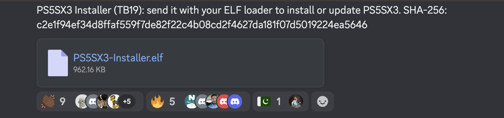
E o melhor: ele também roda jogos direto do disco:
First PS2 discs. Now PS3 discs.
— Sword (@sword_pdf) October 11, 2026
The PS5 is slowly becoming the PlayStation it should've been. 🎮
Sony gave us five generations of PlayStation,
We're trying to fit them all into one.#PS5 #PS3 #PlayStation #PS5SX2 #PS5SX3 #RPCS3 #PS5Pro #Emulation #BackwardsCompatibility… pic.twitter.com/O8Bfp3JXWk
PSP
PSP5, baseado no PPSSPP.
Em breve
Ainda estou escrevendo esta parte.
Nintendo
NES, SNES, Game Boy, GBA, 64
RetroArch, com cores de NES, SNES, GBA, Genesis, arcade e mais.
Ainda não usei no PlayStation (difícil querer jogar Game Boy quando tem emulador de PS3 kkkk), só no PC. Depois coloco um guia de como configurar.
Wii e GameCube
Porpoise, baseado no Dolphin. Tem biblioteca com capas, memory cards e tudo mais.
Nintendo DS, 3DS, Wii U e Nintendo Switch
PS5-ECAM, um launcher só para os quatro consoles:
- Wii U: Cemu
- 3DS: Azahar
- DS: melonDS
- Switch: Eden
Xbox
Xbox original
XPSemu, baseado no Xemu.
Xbox 360
PS5X360, baseado no Xenia Canary (ainda experimental).
Xbox One
Não tem emulador, mas poucos jogos são exclusivos de verdade: a maioria já tem uma versão ou alternativa no PS4, PS5 ou PC. Veja a lista de exclusivos do Xbox One.
Minecraft: ProsperoCraft
ProsperoCraft, Minecraft Java rodando nativo no PS5.
Atualmente tem suporte à versão 26.3 e ao Modrinth, porém alguns mods não funcionam. Veja aqui a lista. Use a sua conta original do Minecraft.
Steam
Tem dois jeitos de rodar seus jogos da Steam. Ambos pegam o jogo e rodam dentro de uma camada de compatibilidade.
Nem todos os jogos funcionam: jogos com launcher próprio ou com anti-cheat provavelmente não vão rodar. Os aplicativos também têm configurações por jogo, então não esqueça de experimentar para deixar tudo rodando liso.
Mesmo assim, Cyberpunk 2077 roda perfeitamente, e com o PlayDen dá para jogar online em jogos como Terraria.
MihawkOS
MihawkOS, um sistema inspirado no Windows que roda jogos de PC via Wine/Proton.
Veja a lista de compatibilidade do MihawkOS.
PlayDen
PlayDen, entra na sua conta Steam, baixa e roda seus jogos de Windows via Wine.
Linux
Ainda não instalei o Linux, porque preciso limpar meu SSD primeiro, então não posso falar por experiência própria como funciona. Assim que eu fizer, eu atualizo aqui.